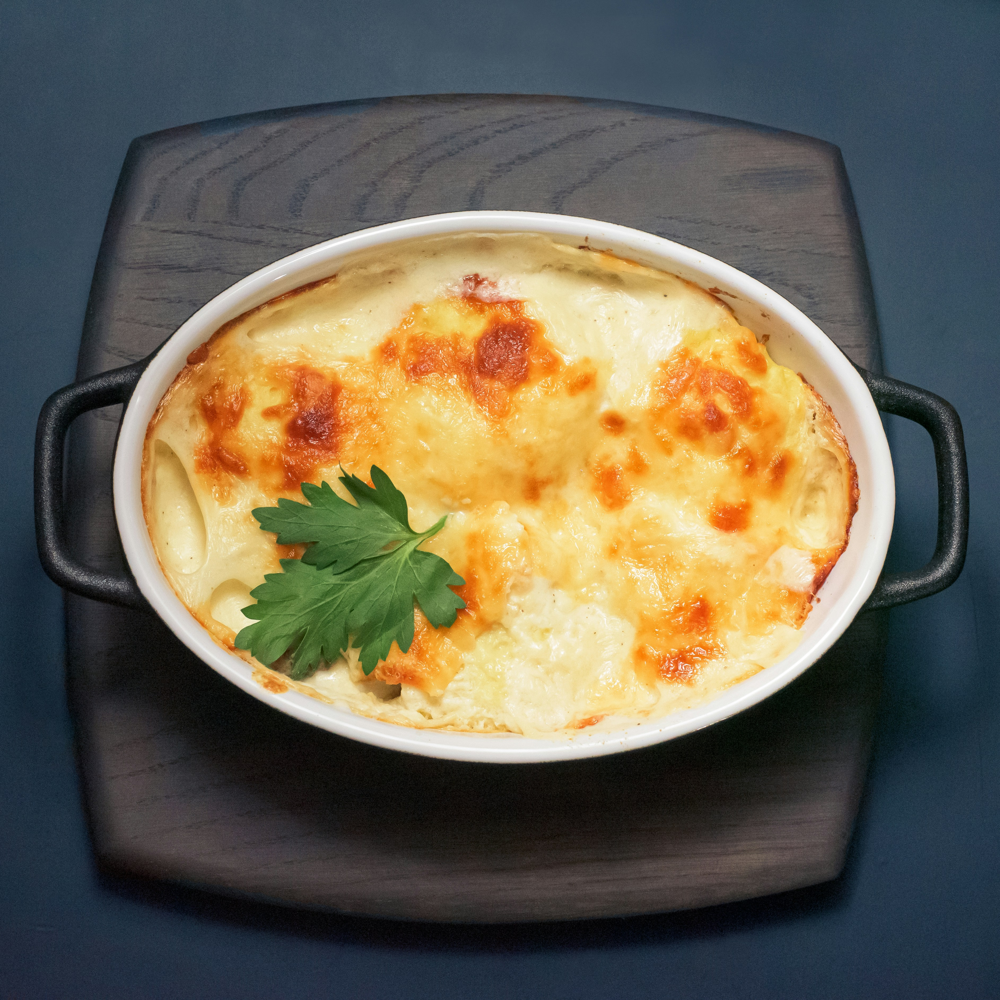

A creamy, cheesy comfort-food casserole that combines tender potatoes with a golden breadcrumb topping—perfect for weeknight dinners or holiday sides.
Grease a 9x13-inch baking dish.
Place diced potatoes in a large pot, cover with salted water, and boil for 15–20 minutes until fork-tender. Drain well.
In a large bowl, mash potatoes slightly (leave some chunks for texture).
Stir in sour cream, milk, melted butter, garlic, salt, pepper, paprika, 1½ cups cheddar cheese, bacon (if using), and half the green onions.
Spread mixture evenly into the prepared baking dish.
Top with remaining ½ cup cheese.
Bake uncovered for 20–25 minutes until heated through and cheese is bubbly and lightly golden.
Sprinkle remaining green onions on top before serving.